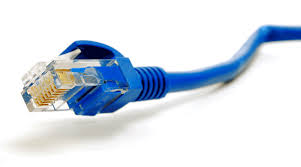

Не редко приходится сталкиваться с проблемой, когда после подключения устройства к Wi-Fi сети не работает интернет. Подключение есть, все вроде бы хорошо, а интернет не работает. Страницы в браузере не открываться, программы не видят подключения к интернету. Как правило, такая проблема появляется при настройке Wi-Fi роутера. Но, часто бывают случаи, когда все работает, доступ к интернету есть, и в какой-то момент он просто пропадает. При этом, тот же ноутбук, смартфон, или планшет к Wi-Fi подключены, а в интернет не заходит.
Сам не раз сталкивался с такой проблемой. Причин и решений очень много. Поэтому, главное во всем по порядку разобраться. Понять кто виновен в этой ситуации и устранить проблему. Понятное дело, что виновен либо Wi-Fi роутер (что чаще все), либо наше устройство, на котором перестал работать интернет. Это может быть компьютер, ноутбук, планшет, телефон и т. д. Не важно. Результат один – подключение к беспроводной сети есть, а интернета нет.
Что бы было понятно, разделим статью на три пункта:
- Что делать, если проблема из-за роутера.
- Решение проблемы на ноутбуке, стационарном компьютере.
- И решение проблемы с интернетом на мобильных устройствах (планшеты, смартфоны).
И так, как я уже писал выше, нам нужно найти причину, по которой интернет на нашем устройстве не работает. Как показывает практика, в основном виновен роутер, сама Wi-Fi сеть.
Если вы столкнулись с этой проблемой при настройке роутера, то переходите по ссылке, и читайте отдельную статью с решениями: при настройке роутера пишет «Без доступа к интернету», или «Ограничено» и нет соединения с интернетом. Там все подробно описано и показано.
При возникновении проблемы, когда Wi-Fi подключен, но интернет не работает, всегда первым делом проверяйте роутер и интернет подключение, как я это описывал выше. Так как причина очень редко кроется в самих ноутбуках, смартфонах, планшетах, и других устройствах.
Если вы столкнулись с этой проблемой при настройке роутера, то переходите по ссылке, и читайте отдельную статью с решениями: при настройке роутера пишет «Без доступа к интернету», или «Ограничено» и нет соединения с интернетом. Там все подробно описано и показано.
При возникновении проблемы, когда Wi-Fi подключен, но интернет не работает, всегда первым делом проверяйте роутер и интернет подключение, как я это описывал выше. Так как причина очень редко кроется в самих ноутбуках, смартфонах, планшетах, и других устройствах.
Если интернет по Wi-Fi не работает из-за проблем в роутере
Как узнать и проверить? Очень просто. У вас скорее всего есть несколько устройств, которые можно подключить к Wi-Fi. Подключаем их к своей сети, и если интернет не работает ни на одном устройстве, то проблема точно в роутере. Или, можно подключить ваш ноутбук (смартфон, планшет) к другой Wi-Fi сети и проверить работу. После того, как вы убедились что проблема в роутере, то можно пробовать ее решить:
- Для начала, просто перезагрузите свой роутер. Можно даже несколько раз.
- Обязательно нужно убедится, что интернет оплачен, и нет никаких проблем на стороне провайдера. Что бы это выяснить, можно позвонить в поддержку интернет-провайдера. Так же, вы можете подключить интернет напрямую к компьютеру (если есть такая возможность) и проверить будет ли он работать без роутера.
- Проверьте, правильно ли подключены провода к роутеру. Так же посмотрите на индикаторы на самом маршрутизаторе (мигают ли они, как обычно).
- Если интернет без роутера работает, то нужно проверить настройки. Возможно, слетели настройки, и роутер не может подключится к интернету, установить соединение с интернет-провайдером. Я не знаю какой у вас роутер, поэтому ищите инструкцию для вашего производителя у нас на сайте, в разделе "Настройка роутера" (меню сверху).
- Если Wi-Fi сеть не ваша, то вполне возможно что в ее работе появились какие-то проблемы. Или, например, сосед не оплатил интернет
Ноутбук к Wi-Fi подключен, но доступа в интернет нет
Если проблема появилась только на ноутбуке, или стационарном компьютере, то нужно проверить некоторые настройки. После подключения, у вас скорее всего будет желтый восклицательный значок возле иконки подключения, и статус "Без доступа к интернету", или "Ограниченно".
А при попытке открыть сайт, мы увидим ошибку "Страница недоступна".
У нас на сайте
уже
есть большая статья по решению ошибки "Без доступа к интернету" в Windows 7. Если у вас Windows 10, то
смотрите эту статью.
Первым делом я бы советовал перезагрузить ноутбук, и проверить выставлено ли автоматическое получение
IP-адреса в свойствах беспроводного соединения. Сделать это можно так:
Что делать, если Wi-Fi на телефоне (планшете) подключен, но интернет не работает?
На мобильных устройствах, которые работает на Android, iOS, или Windows Phone, точно такая же
ситуация. Подключение к беспроводной сети может быть установлено, но страницы в браузере открываться
не будут.
Кстати, на Android устройствах значок подключения к Wi-Fi может быть серым вместо
синего. В таком случае, проверьте, правильно ли выставлена дата и время. Если вы уверены, что проблема
именно в вашем устройстве, а не в Wi-Fi сети, то перезагрузите своем мобильное устройство, и
попробуйте подключится заново. Так же, проверьте как будет работать интернет при подключении к другим
беспроводным сетям.